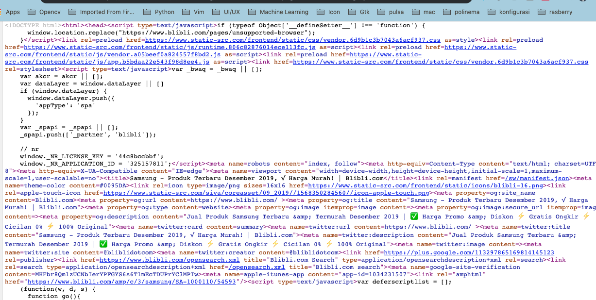

Awali setiap sebelum membuat projek dengan berdoa.
Baca dan pahami tujuan, dasar teori, dan latihan-latihan modul dengan baik.
Kerjakan tugas-tugas projek dengan baik, sabar dan jujur
Ulasan Teori
Kelas URL
Kelas URL adalah cara paling sederhana untuk sebuah program Java untuk menemukan dan mengambil data dari jaringan. Anda
tidak perlu khawatir tentang rincian protokol yang digunakan, format data yang diambil, atau bagaimana berkomunikasi
dengan server, anda cukup memberitahu URL dan mendapatkan data untuk Anda.
Kelas java.net.URL adalah sebuah abstraksi dari Uniform Resource Locator (URL) seperti http://www.hamsterdance.com/
atau ftp://ftp.redhat.com/pub/. Listing program berikut adalah contoh penggunaan kelas URL yang meliputi pengecekan
URL dan berbagai cara penulisannya menggunakan kelas URL.
URL terdiri dari lima bagian, yaitu Skema atau dikenal sebagai protokol, kewenangan, path, fragmen pengenal, juga
dikenal sebagai bagian atau ref serta string query. Contohnya adalah sebagai berikut:
http://java.sun.com:80/docs/books/tutorial/index.html#DOWNLOADING
Contoh penerapannya adalah sebagai berikut:
URLConnection adalah kelas abstrak yang merupakan sambungan aktif ke sumber daya yang ditentukan oleh URL. Kelas
URLConnection memiliki dua tujuan yang berbeda tetapi terkait.
Pertama, memberikan kontrol lebih besar atas interaksi dengan server (terutama server HTTP) daripada kelas URL. Dengan
URLConnection, Anda dapat memeriksa header yang dikirimkan oleh server dan respon yang sesuai. Anda dapat mengatur field
header yang digunakan dalam permintaan klien. Anda dapat menggunakan URLConnection untuk men-download file biner.
Akhirnya, URLConnection sebuah memungkinkan Anda mengirim data kembali ke server web dengan POST atau GET dan
menggunakan metode permintaan HTTP yang lain.
Langkah-langkah Praktikum
Untuk membuat sebuah program yang menggunakan kelas URLConnection diperlukan urutan langkah-langkah dasar sebagai berikut:
Buatlah objek URL.
Panggil metode openConnection() untuk mengambil objek URLConnection dari suatu URL.
Mengkonfigurasi URLConnection tersebut.
Baca field header.
Dapatkan input stream dan membaca data.
Dapatkan output stream dan menulis data.
Menutup koneksi.
Tulislah program berikut:
publicclassURLConnectionReader{
publicstaticvoidmain(String[] args)throws Exception
{
URL alamat = new URL("https://www.polinema.ac.id/");
URLConnection yc = alamat.openConnection();
BufferedReader in = new BufferedReader(
new InputStreamReader(
yc.getInputStream()));
String inputLine;
while ((inputLine = in.readLine()) != null)
System.out.println(inputLine);
in.close();
}
}
Crawling atau scraping website
Pada praktikum selanjutnya kita akan mencoba mengambil data dari sebuah website e-commerce
Kemudian pilih kategori tertentu, pada contoh kali ini kategorinya adalah handphone dengan merk samsung
Silakan inspect element halaman website tersebut, ketika menggunakan Chrome(View - Developer - Developer Tool)
Inspect Element
Tetapi sayangnya, kita tidak bisa langsung melakukan crawling url tersebut. Karena sama blibli diarahkan ke halaman
tertentu ketika akan mengaksesnya.
Silakan lihat tampilkan code pada halaman tersebut dengan klik kanan - View Page Source, tampilan seperti berikut ini

Page Source
Pada halaman tersebut url yang mengarahkan ke produk samsung yaitu https://www.blibli.com/amp/c/3/samsung/SA-1000110/54593.
Silakan paste halaman tersebut ke browser Anda, seharusnya akan tampil beberapa produknya, kemudian View Page Source
kembali untuk memastikan apakah sudah bisa dilakukan crawling atau scraping
Untuk memudahkan scraping kita membutuhkan library yaitu jsoup, silakan download di https://jsoup.org/download kemudian pasang library tersebut
pada editor Anda. Versi yang terakhir pada jobsheet ini adalah 1.12.1.
Ketika menggunakan maven bisa menambah tag seperti ini pada file pom.xml
<dependency><!-- jsoup HTML parser library @ https://jsoup.org/ --><groupId>org.jsoup</groupId><artifactId>jsoup</artifactId><version>1.12.1</version></dependency>
Atau kalau Gradle compile 'org.jsoup:jsoup:1.12.1'
Buat kode seperti di bawah ini
try {
// String url = "https://www.blibli.com/c/3/samsung/SA-1000110/54593?page=1"// + "&start=0&category=SA-1000110&sort=";
String url = "https://www.blibli.com/amp/c/3/samsung/SA-1000110/54593";
Validate.isTrue(true, "URL " + url + " tidak dapat diakses");
System.out.println("Fetching " + url + " ...");
Document document = Jsoup.connect(url).get();
Elements div = document.select("div.product-item");
div.stream().forEach(el -> {
Elements allElements = el.getAllElements();
for (int i = 0; i < allElements.size(); i++) {
switch (i) {
case2://image
System.out.println("" + allElements.get(i).attr("src"));
break;
case3://detail
System.out.println("" + allElements.get(i).text());
break;
case5://harga
System.out.println("" + allElements.get(i).text());
break;
case7://produk yang sama
System.out.println("" + allElements.get(i).text());
break;
case15://komentar
System.out.println("" + allElements.get(i).text());
break;
}
}
});
} catch (IOException ex) {
Logger.getLogger(BliBliScrapper.class.getName()).log(Level.SEVERE, null, ex);
}
Pada kode di atas terdapat baris perintah document.select("div.product-item"), digunakan untuk mengambil element
dengan tag div dan class product-item. Untuk dapat menggunakan jsoup secara mendalam bisa mengunjungi halaman
https://jsoup.org/cookbook/
Pertanyaan
Jika kita lihat, halaman yang ditampilkan sebelumnya menampilkan produk dalam 1 halaman sedangkan sebenarnya terdiri
dari beberapa halaman. Modifikasi program tersebut sehingga bisa menampilkan semua produknya.
Silakan cari website e-commerce yang lain, kemudian lakukan crawling agar lebih faham menggunakan jsoup